In my final year of Communication and Multimedia Design (CMD), I did another project for Royal, an arthouse cinema in Heerlen (for my previous work for Royal, see Royal in Motion). They are undergoing a large transition, during which they want to connect with a younder target audience. Before the renovation, Royal's audience was mainly above 55 years old, despite national trends showing that younger audiences are more and more likely to visit arthouse cinemas. The goal of this project was to create a campaign that makes Royal visible in the city and attracts a younger audience. The campaign focused on the diversity of the cinema's future offerings and included a visual identity, a series of posters, and an interactive installation. In mijn laatste jaar van Communication and Multimedia Design (CMD) voerde ik wederom een project uit voor Royal, een artistiek filmhuis in Heerlen (voor mijn vorige werk voor Royal, zie Royal in Motion). Ze ondergaan een grote transitie, waardoor ze willen aansluiten bij een jonger doelpubliek. Vóór de renovatie was Royal's publiek voornamelijk ouder dan 55 jaar, ondanks nationale trends die aantonen dat jongere doelgroepen steeds vaker filmhuizen bezoeken. Het doel van dit project was het creëren van een campagne die Royal zichtbaar maakt in de stad en een jonger publiek aantrekt. De campagne legde de focus op de diversiteit van het toekomstige aanbod van het filmhuis en omvatte een visuele identiteit, een reeks posters en een interactieve installatie.
ResearchOnderzoek
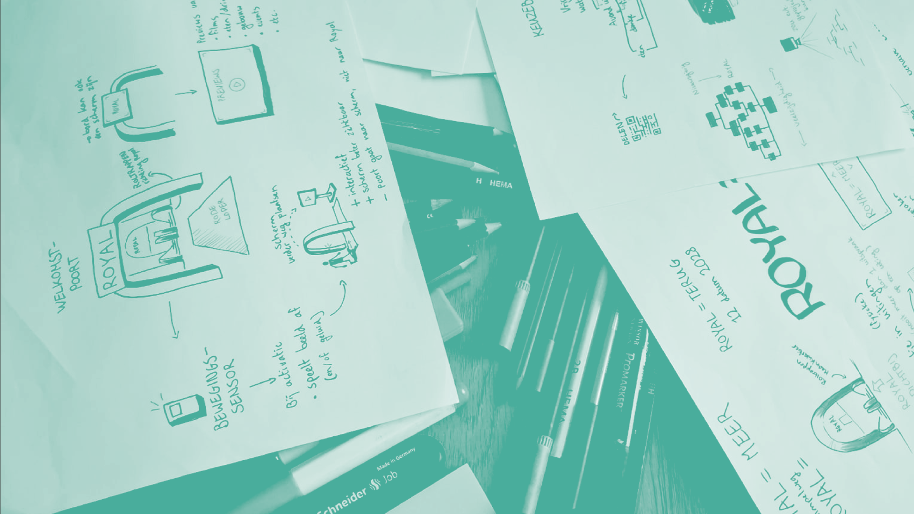
Through stakeholder interviews, target group sessions, desk research, and a competitive
analysis of similar venues, I mapped the landscape around arthouse cinema and public communication.
The research revealed that young people in Parkstad aren't opposed to culture, they simply don't
seek it out beyond their immediate social circle.
The research made it clear that the
campaign should focus on changing perceptions of Royal, rather than simply promoting the movie
theatre. The
campaign should show that Royal is a place for everyone, and that it offers a diverse range of films
and events that are relevant to young people. Another issue that came up is the perception that
Royal is a thing of the past, despite the fact that it has been showing movies every day for years.
These insights directly shaped the design direction. The research made clear that any
effective communication needed to be social, repeatable, and grounded in what Royal will actually
offer. Rather than positioning Royal as a cultural institution to be respected, the campaign needed
to frame it as a place that is genuinely for you. This led to the concept 'Royal is er voor jou': a
campaign that communicates the venue's versatility across film, food, and community, and actively
invites young people in rather than assuming they'll find their way there.
Door interviews met belanghebbenden, doelgroepsessies, bureauonderzoek en een
analyse van gerelateerde projecten heb ik het landschap rond
arthouse-bioscoop en publiekscommunicatie in kaart gebracht. Het onderzoek toonde aan dat jongeren
in Parkstad niet
tegen cultuur zijn, ze zoeken het gewoon niet op buiten hun onmiddellijke sociale kring.
Het onderzoek maakte duidelijk dat de campagne zich moest richten op het veranderen van
percepties van Royal, in plaats van simpelweg het filmhuis te promoten. De campagne moest laten zien
dat Royal een plek voor iedereen is, en dat het een diverse selectie van films en evenementen biedt
die relevant zijn voor jongeren. Een ander probleem dat naar voren kwam, is de perceptie dat Royal
iets uit het verleden is, ondanks het feit dat het al jaren elke dag films toont.
Deze inzichten gaven vorm aan de ontwerprichting. Het onderzoek maakte duidelijk
dat effectieve communicatie sociaal, herhaalbaar en gegrond moet zijn in wat Royal werkelijk zal
bieden.
In plaats van Royal als een culturele instelling te positioneren die wordt gerespecteerd, moest de
campagne het framen als een plek die echt voor jou is. Dit leidde tot het concept 'Royal is er voor
jou': een campagne die de veelzijdigheid van de plek met betrekking tot film, horeca en gemeenschap
communiceert, en actief jongeren uitnodigt in plaats van aan te nemen dat ze hun weg daar zelf
zullen vinden.
Keuzeboom
The centerpiece of the campaign is the 'Keuzeboom' (Decision Tree), an interactive
installation placed on the square in front of the train station. Passers-by navigate a branching
series of choices about their mood, company, and what kind of evening they're looking for,
ultimately arriving at a personalised suggestion for their ideal day out, all of which leads to
Royal. The installation turns a passive audience into active participants, creating a
low-threshold, playful first encounter with the venue without requiring any prior knowledge or
commitment. The installation also points to Royal literally, as the final arrow points to the
cinema's location down the stairs.
The Decision Tree was also developed as a
digital experience, accessible via a QR code linked to the physical installation and various
other touchpoints. The digital version mirrors the branching logic of the physical tree, guiding
users through the same series of choices on their phone and ending with a personalised result.
This dual format extends the reach of the installation beyond the physical location, allowing
people to engage with it in their own time. A working prototype of the digital Decision Tree can
be experienced here, or by scanning the QR-code below.
Het boegbeeld van de campagne is de 'Keuzeboom', een interactieve installatie op
het Spoorplein, direct voor het station. Voorbijgangers navigeren een vertakkende reeks keuzes
over hun
stemming, gezelschap en wat voor soort avond ze zoeken, wat uiteindelijk leidt tot een
gepersonaliseerde suggestie voor hun ideale dagje uit, die allemaal naar Royal wijzen. De
installatie verandert een passief publiek in actieve deelnemers, wat een laagdrempelige, speelse
eerste ontmoeting met de plek creëert zonder enige voorkennis of betrokkenheid te vereisen. De
installatie wijst ook letterlijk naar Royal, aangezien de laatste pijl naar de locatie van
het filmhuis wijst onderaan de trap.
De Keuzeboom is ook als een digitale ervaring
ontwikkeld, toegankelijk via een QR-code gekoppeld aan de fysieke installatie en verschillende
andere uitingen. De digitale versie weerspiegelt de vertakkingslogica van de fysieke boom,
waarbij gebruikers door dezelfde reeks keuzes worden geleid op hun telefoon en eindigen met een
gepersonaliseerd
resultaat. Dit format breidt het bereik van de installatie buiten de fysieke locatie uit,
waardoor mensen eraan kunnen deelnemen in hun eigen tijd. Een werkend prototype van de digitale
Keuzeboom kan hier worden ervaren, of door de onderstaande QR-code te scannen.
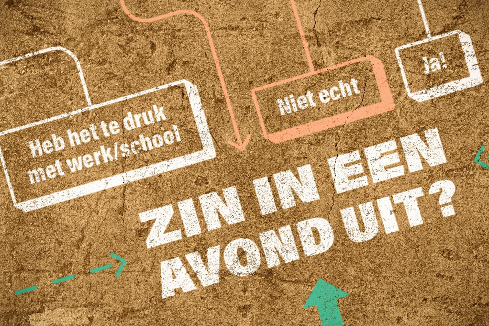
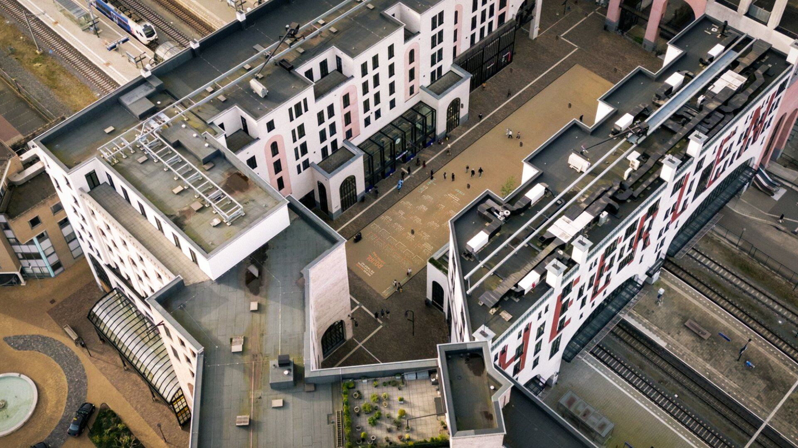
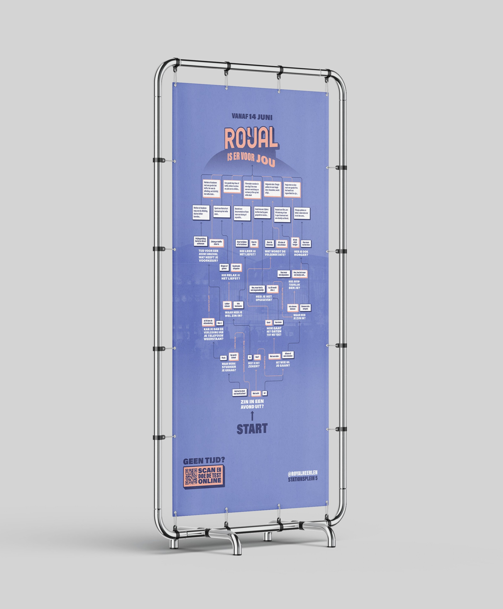
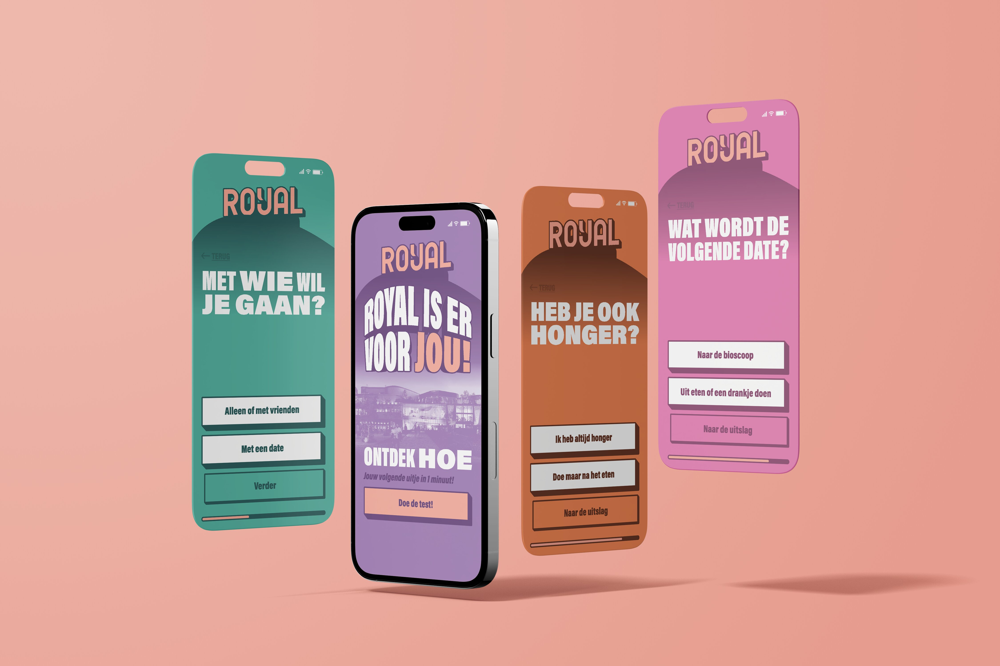
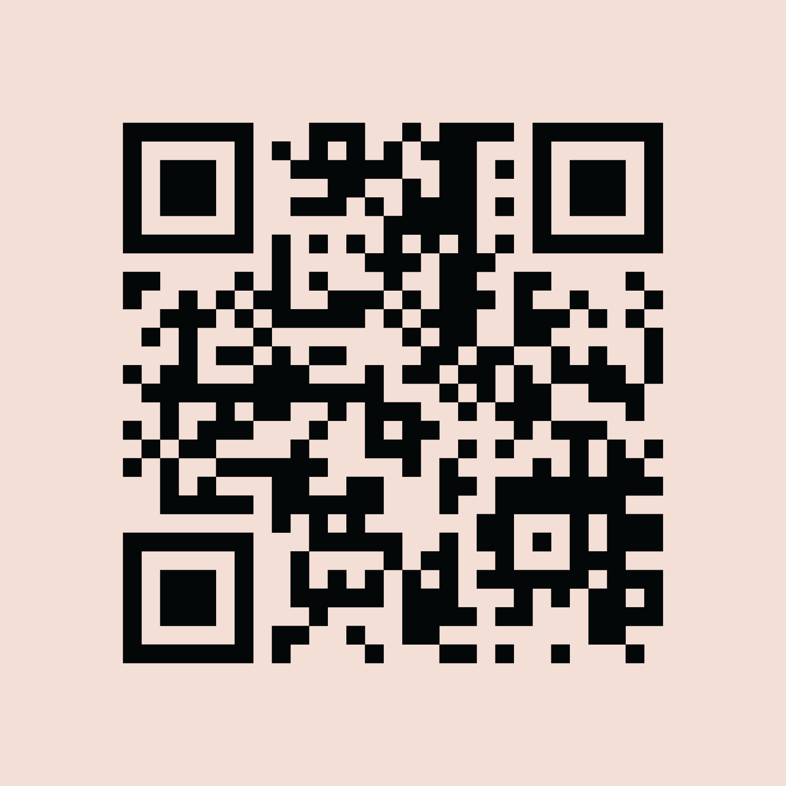
Visual IdentityVisuele identiteit
The visual identity of the campaign draws on Royal's existing neon signage; bold, high-contrast lettering with a strong typographic presence; updated for legibility and contemporary application. Aditionally, the iconic building's shape is incorporated into the shape language. The result is a visual language that feels both historically rooted and immediately relevant to a younger audience. De visuele identiteit van de campagne bouwt voort op Royal's bestaande neon-bord; vet, hoogcontrast letterwerk met een sterke typografische aanwezigheid; bijgewerkt voor leesbaarheid en hedendaagse toepassing. Bovendien is de vorm van het iconische gebouw opgenomen in de vormtaal. Het resultaat is een visuele taal die historisch gegrond is en toch onmiddellijk relevant is voor een jonger publiek.
Posters
The posters use a direct, fill-in-the-blank format (Royal is er voor…) that keeps the message open and welcoming while anchoring each execution to a specific experience the venue offers. The QR code on each poster leads to the digital version of the Decision Tree, allowing passers-by to engage with the campaign even if they don't come into contact with the physical installation. The posters would be placed in high-traffic areas in Heerlen, including bus stops, train stations, and popular spots for young people such as the University of Applied Sciences. De posters gebruiken een direct invulformat (Royal is er voor…) dat het bericht open en verwelkomend houdt terwijl elke uitvoering wordt verankerd aan een specifieke ervaring die de plek biedt. De QR-code op elke poster leidt naar de digitale versie van de Keuzeboom, waardoor voorbijgangers met de campagne kunnen interacteren, zelfs als ze niet in contact komen met de fysieke installatie. De posters zouden op drukke locaties in Heerlen worden geplaatst, waaronder bushaltes, het station en populaire plekken voor jongeren, zoals de Hogeschool.
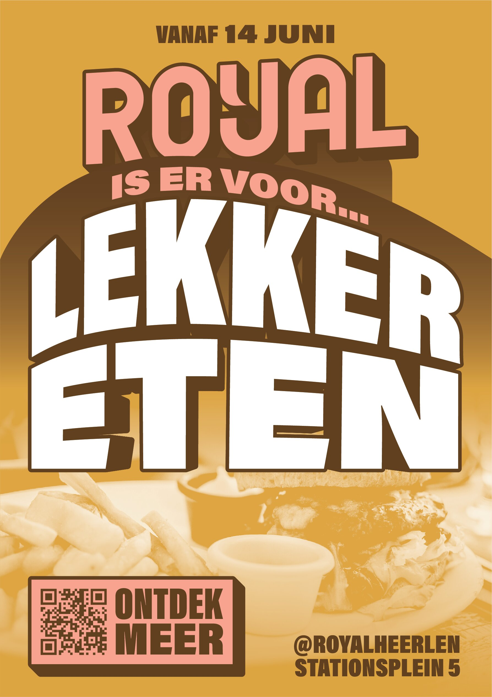
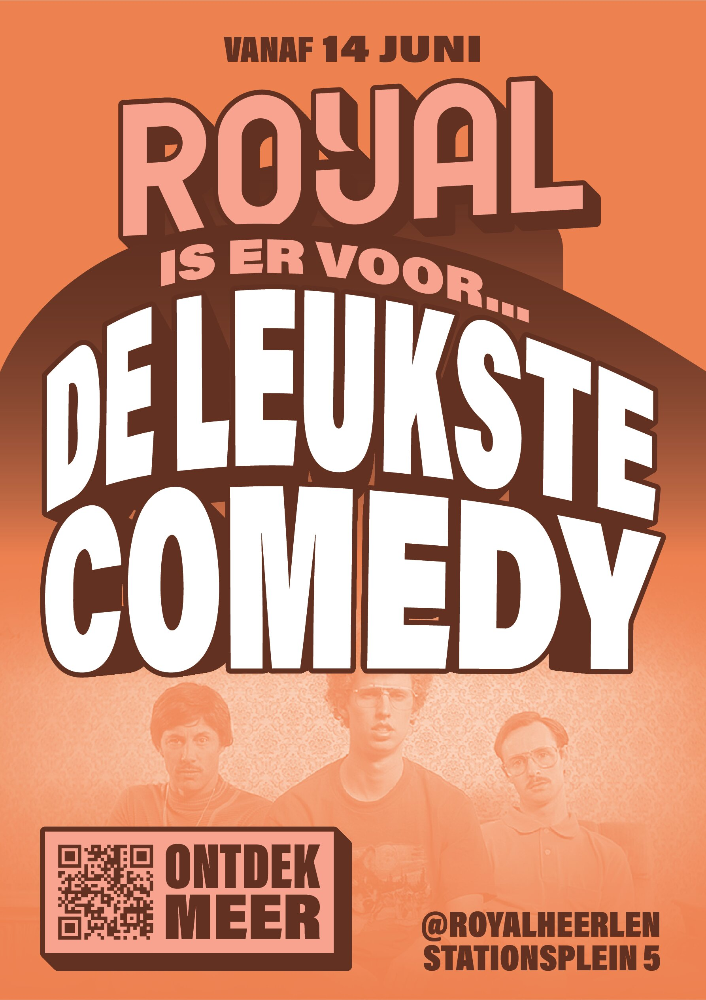
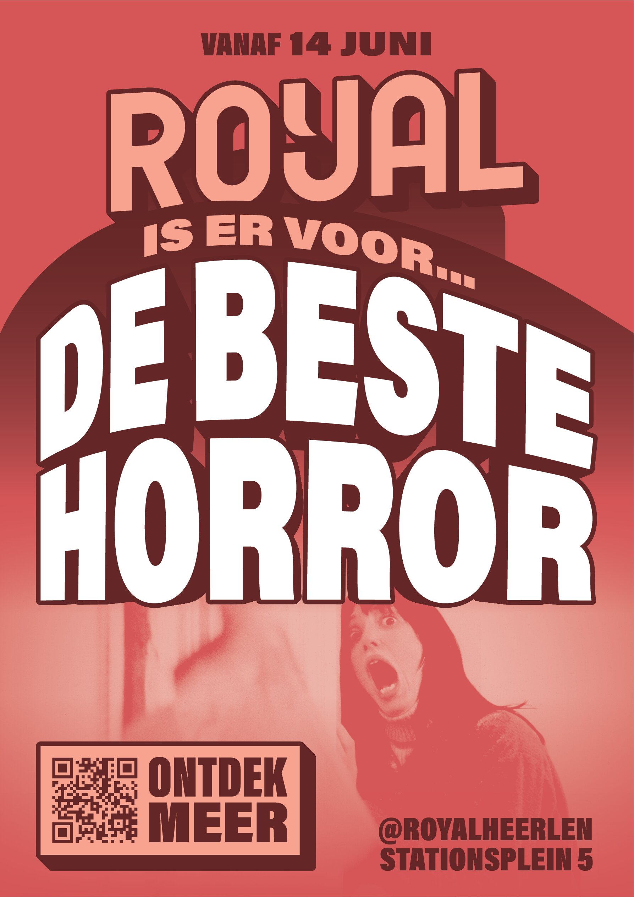
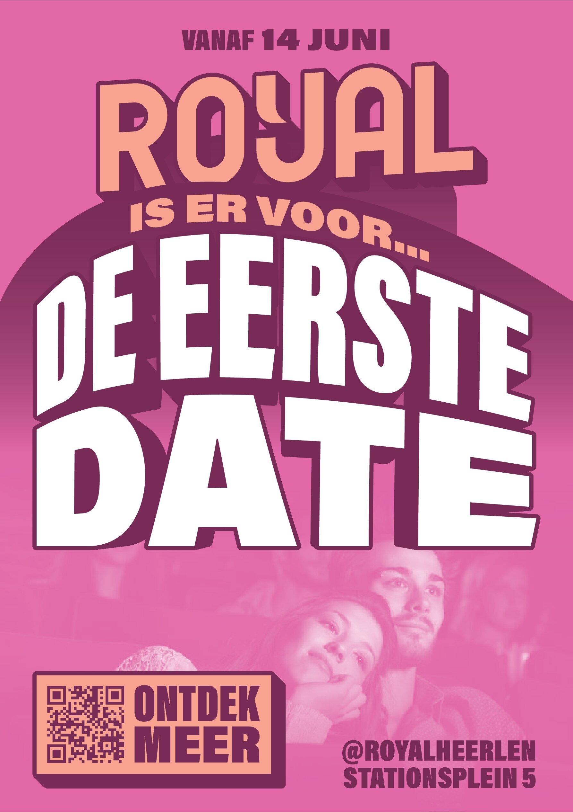
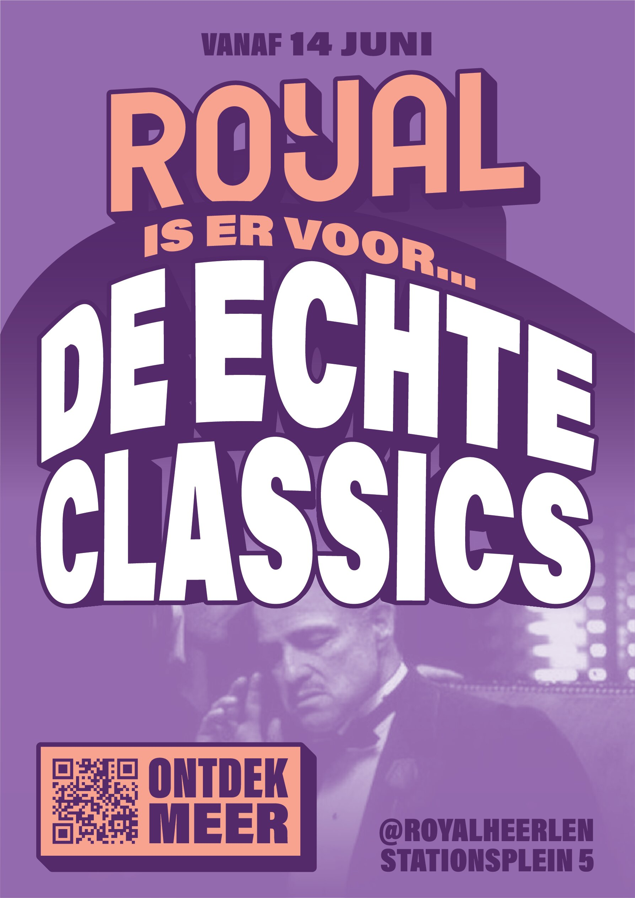
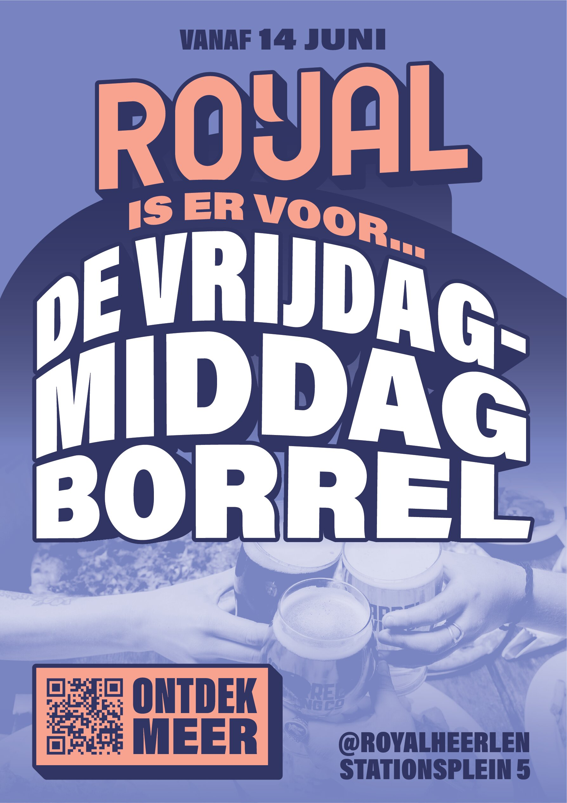
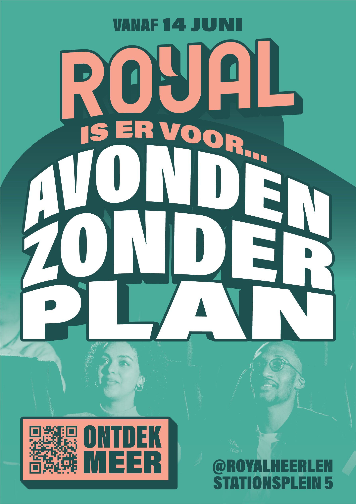
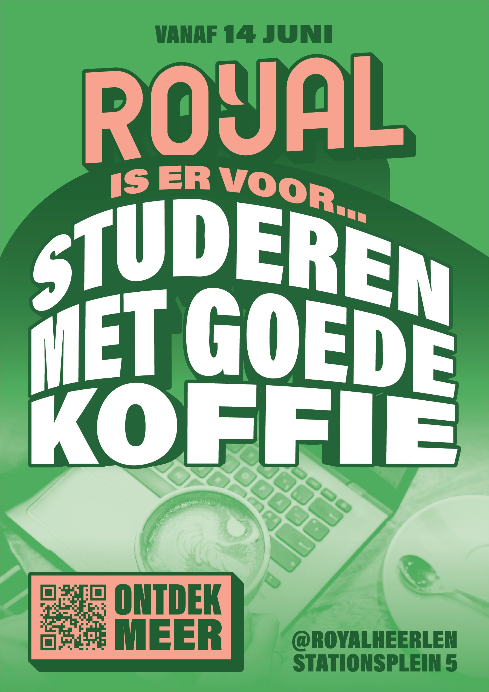